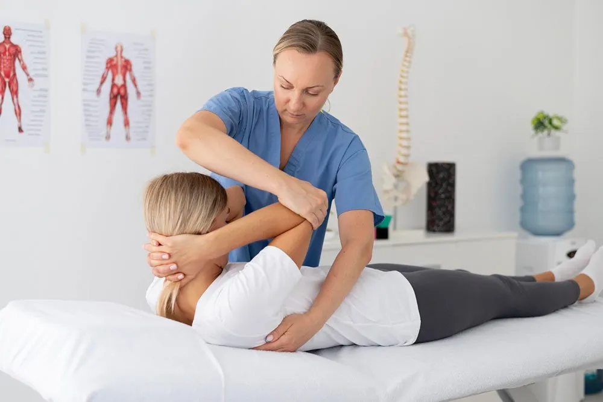
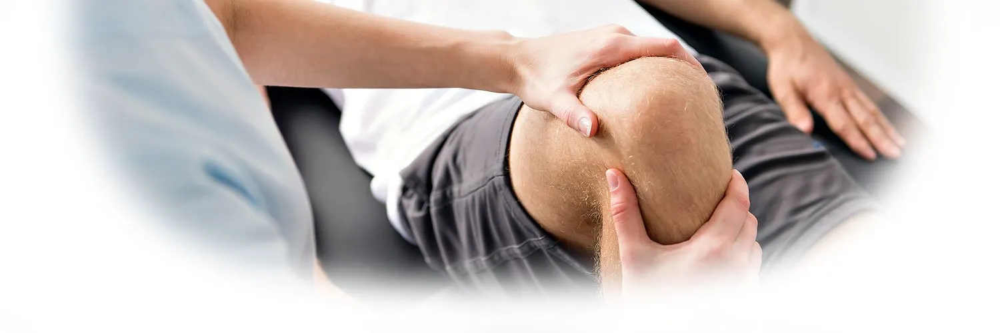
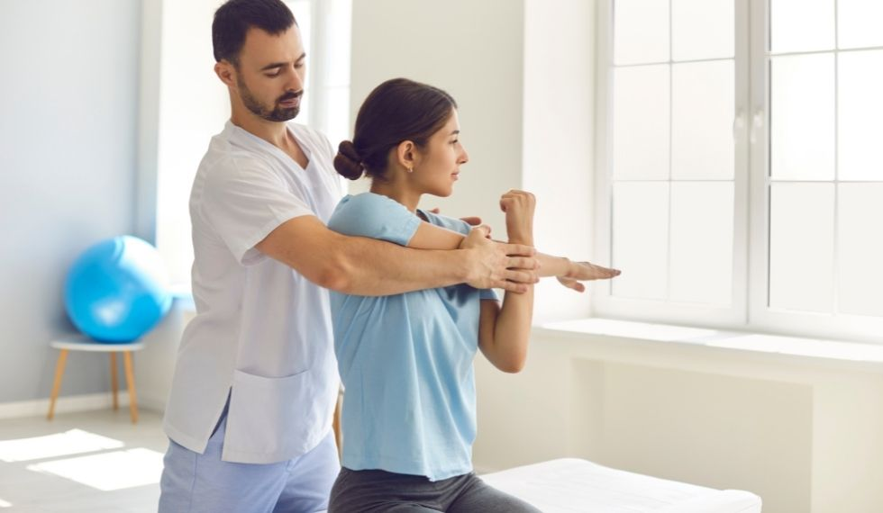
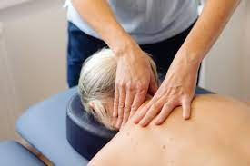
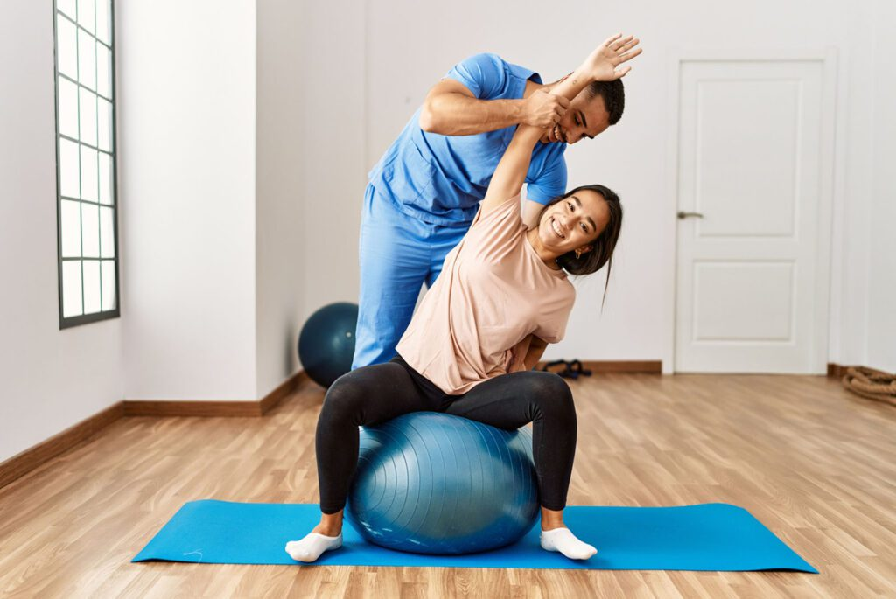
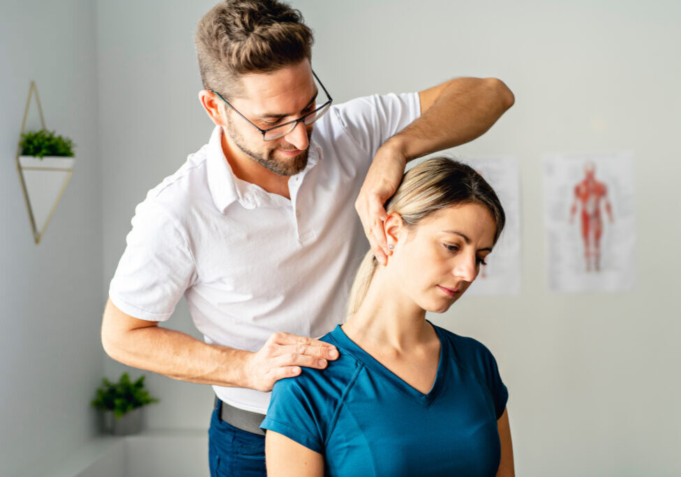
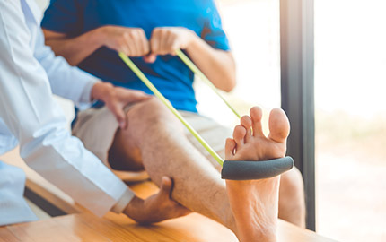
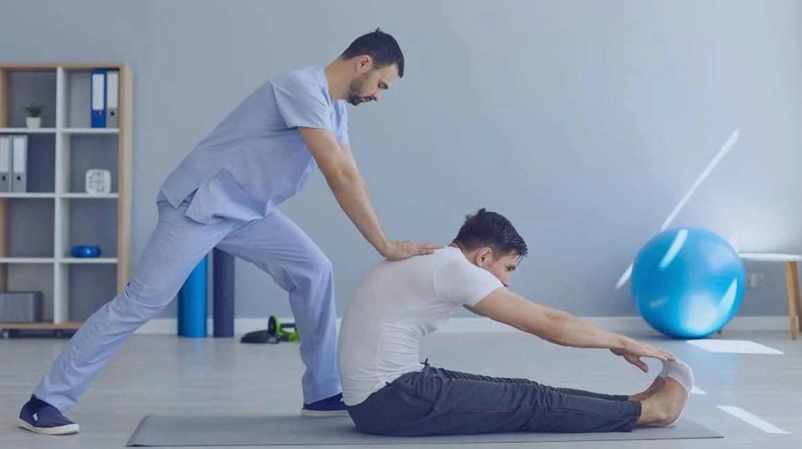

MOVEMENT IN FOCUS
Moments of movement.
Spaces of possibility.
A visual collection of illustrative rehabilitation, exercise and wellbeing photography. Images do not depict services provided by this fictional clinic.







